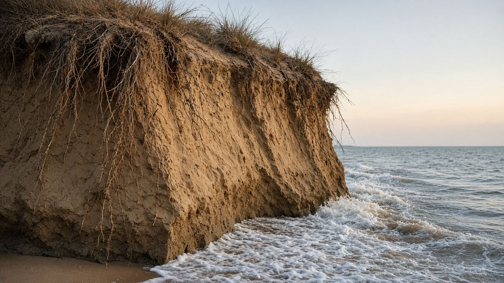
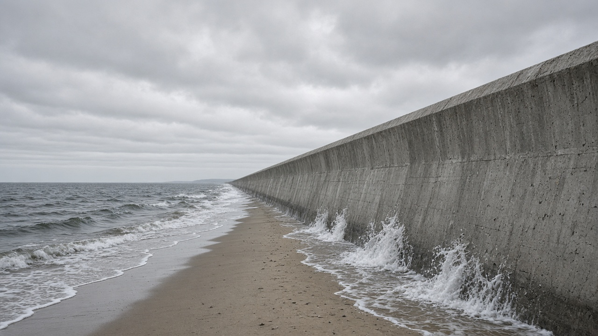
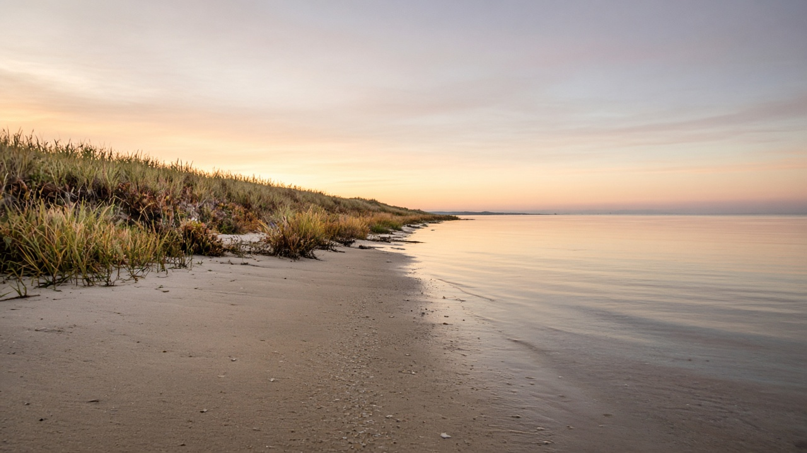

Coastal Erosion, Sea-Level Rise, and Shorelines
Published on August 20, 2026

Shorelines are not fixed lines on a map; they migrate as waves, tides, storms, and sediment supply push sand and mud landward or seaward. Coastal erosion becomes a crisis when that natural movement meets houses, roads, and ports that were built on a historically wide beach or on a sinking delta. Sea-level rise from warming oceans and melting ice raises the baseline on which storms act, so the same cyclone now floods farther inland and more often. Deltas such as the Ganga–Brahmaputra–Meghna system also subside under the weight of sediment and from groundwater and hydrocarbon extraction, adding local relative sea-level rise on top of the global trend.
Human changes to sediment budgets accelerate loss. Dams trap sand that once nourished beaches; river training and sand mining starve the nearshore; seawalls reflect wave energy and scour the beach in front of the wall. Mangrove clearing and reef degradation remove living breakwaters. In the Sundarbans and other low coasts of the Bay of Bengal, saltwater intrusion into aquifers and fields already follows shoreline retreat, pushing people to migrate even before houses fall into the sea. Hard armour can save a port for a decade while transferring erosion to the next village, which is why engineers now speak of sediment cells and living shorelines rather than of beating the ocean in place.
Adaptation that lasts treats the coast as a moving system. Setbacks, dune and mangrove restoration, beach nourishment where sediment is available, and planned relocation of the most exposed assets reduce repeated disaster spending. Tide gauges, satellite shorelines, and community mapping show which stretches are drowning and which still have a sediment surplus. Inland mountains matter here too: Himalayan erosion and river dams decide how much sand reaches the delta that holds back the Bay of Bengal. Teaching sea-level rise together with sediment science keeps the conversation from becoming only a story of distant ice sheets and reminds students that shoreline fate is written in catchments as well as in climate models.

किनारा नक्साका स्थिर रेखा होइनन्; लहर, ज्वारभाटा, आँधी र तलछट आपूर्तिले बालुवा र हिलो जमिनतिर वा समुद्रतिर धकेल्दा तिनीहरू सर्छन्। तटीय क्षरण तब संकट बन्छ जब त्यो प्राकृतिक गति ऐतिहासिक रूपमा फराकिलो समुद्र तट वा डुब्दै गरेको डेल्टामा बनाइएका घर, सडक र बन्दरगाहसँग ठोक्किन्छ। न्यानो महासागर र पग्लिँदो बरफबाट समुद्री सतह वृद्धिको आधार उचाल्छ जसमा आँधी काम गर्छन्, त्यसैले उही चक्रवात अब अझ भित्र र बढी पटक डुबाउँछ। गंगा–ब्रह्मपुत्र–मेघना जस्ता डेल्टा तलछटको तौल र भूजल तथा खनिज तेल र ग्यास निकाल्नेबाट पनि धसिन्छन्, विश्वव्यापी प्रवृत्तिमाथि स्थानीय सापेक्ष समुद्री सतह वृद्धि थप्छन्।
तलछट बजेटमा मानव परिवर्तनले हानि तिव्र पार्छ। बाँधले एक समय समुद्र तट पोषण गर्ने बालुवा थुपार्छन्; नदी तालिम र बालुवा उत्खननले नजिकैको तट भोकमरी पार्छन्; समुद्री पर्खालले लहर ऊर्जा फर्काएर पर्खालअघिको बालुवा खोस्छन्। म्यानग्रोभ फँडानी र चट्टान क्षयले जीवित छेक्ने पर्खाल हटाउँछन्। सुन्दरबन र बंगालको खाडीका अन्य होचा तटमा किनारा पछि हट्दै गर्दा भूमिगत पानी र खेतमा नुन पानी पस्नु पहिले नै मानिस बसाइँ सर्न बाध्य पार्छ, घर समुद्रमा खस्नुअघि नै। कडा कवचले एक दशक बन्दरगाह जोगाउन सक्छ भने क्षरण अर्को गाउँमा सार्छ, त्यसैले इन्जिनियर अहिले महासागरलाई ठाउँमा हराउने होइन तलछट कक्ष र जीवित किनारा भन्छन्।
टिक्ने अनुकूलन तटलाई चलिरहेको प्रणाली मान्छ। पछाडि हट्ने दूरी, टिब्बा र म्यानग्रोभ पुनर्स्थापना, तलछट उपलब्ध भएमा समुद्र तट पोषण, र सबैभन्दा जोखिममा रहेका सम्पत्तिको योजनाबद्ध स्थानान्तरणले दोहोरिने विपद् खर्च घटाउँछन्। ज्वार गेज, उपग्रह किनारा र सामुदायिक नक्साङ्कनले कुन पट्टी डुब्दै छ र कुनसँग अझै तलछट बचत छ देखाउँछन्। भित्री हिमाल यहाँ पनि महत्त्वपूर्ण छन्: हिमालयी क्षरण र नदी बाँधले बंगालको खाडी थाम्ने डेल्टामा कति बालुवा पुग्छ निर्णय गर्छन्। समुद्री सतह वृद्धिलाई तलछट विज्ञानसँगै सिकाउँदा कुरा टाढाका बरफ चादरको कथा मात्र बन्दैन र विद्यार्थीलाई किनाराको भाग्य जलवायु मोडेलमा मात्र होइन जलाधारमा पनि लेखिन्छ भन्ने सम्झाउँछ।

किनारे नक्शे की स्थिर रेखाएँ नहीं; तरंग, ज्वार, तूफान और तलछट आपूर्ति बालू और कीचड़ को भूमि या समुद्र की ओर धकेलें तो वे सरकते हैं। तटीय क्षरण तब संकट बनता है जब वह प्राकृतिक गति ऐतिहासिक रूप से चौड़े समुद्र तट या धँसते डेल्टा पर बने घर, सड़क और बंदरगाह से टकराती है। गर्म महासागर और पिघलती बर्फ से समुद्री सतह वृद्धि वह आधार उठाती है जिस पर तूफान काम करते हैं, इसलिए वही चक्रवात अब और भीतर तथा अधिक बार डुबाता है। गंगा–ब्रह्मपुत्र–मेघना जैसे डेल्टा तलछट के भार और भूजल तथा खनिज तेल और गैस निकालने से भी धँसते हैं, वैश्विक प्रवृत्ति पर स्थानीय सापेक्ष समुद्री सतह वृद्धि जोड़ते हैं।
तलछट बजट में मानव परिवर्तन हानि तेज़ करते हैं। बाँध कभी समुद्र तट पोषित करने वाली बालू रोकते हैं; नदी प्रशिक्षण और बालू खनन निकटवर्ती तट भूखा करते हैं; समुद्री दीवार तरंग ऊर्जा परावर्तित कर दीवार के आगे की बालू खोदती है। मैंग्रोव कटाई और भित्ति क्षय जीवित रोकने वाली दीवारें हटाते हैं। सुंदरबन और बंगाल की खाड़ी के अन्य नीचे तटों पर किनारा पीछे हटते हुए भूमिगत जल और खेतों में खारा जल घुसना घर समुद्र में गिरने से पहले ही लोगों को पलायन को बाध्य करता है। कठोर कवच एक दशक बंदरगाह बचा सकता है जबकि क्षरण अगले गाँव पर सरकाता है, इसलिए अभियंता अब महासागर को जगह पर हराने की नहीं तलछट कक्ष और जीवित किनारे की बात करते हैं।
टिकने वाला अनुकूलन तट को गतिशील प्रणाली मानता है। पीछे हटने की दूरी, टिब्बा और मैंग्रोव पुनर्स्थापना, तलछट उपलब्ध हो तो समुद्र तट पोषण, और सबसे जोखिम वाले परिसंपत्तियों का नियोजित स्थानांतरण दोहराए आपदा खर्च घटाते हैं। ज्वार गेज, उपग्रह किनारे और सामुदायिक मानचित्रण दिखाते हैं कौन सी पट्टी डूब रही है और किसके पास अभी तलछट बचत है। भीतरी हिमालय यहाँ भी महत्त्वपूर्ण हैं: हिमालयी क्षरण और नदी बाँध तय करते हैं बंगाल की खाड़ी थामे रखने वाले डेल्टा तक कितनी बालू पहुँचे। समुद्री सतह वृद्धि को तलछट विज्ञान के साथ सिखाने पर बात दूर बर्फ चादरों की कथा मात्र नहीं रहती और छात्रों को याद दिलाती है कि किनारे का भाग्य जलवायु मॉडलों में ही नहीं जलग्रहणों में भी लिखा जाता है।